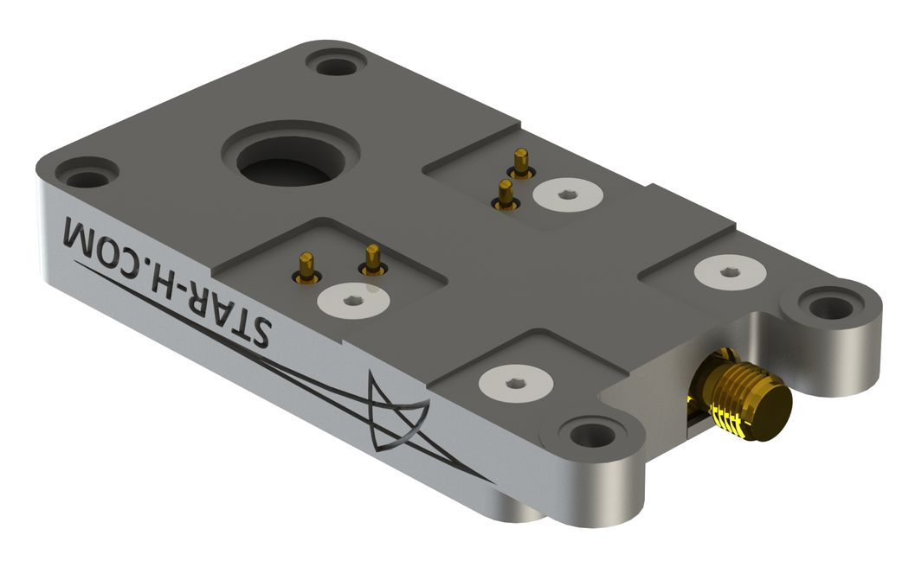

UAV Whip and Blade Antennas
2012–2016
A series of breakaway whip antennas and blade antennas developed for UAV platforms. The whip antennas were shaped from nitinol wire, and I developed processes to fabricate them with precise jigs that held the shape memory alloy while the material was cycled through specific temperature profiles in a kiln. In some applications, customers needed several antennas installed in an array on the aircraft, so a common matching network housing design was adapted to each location using 3D-printed shims that accomodated the fuselage's organic curvatures.
